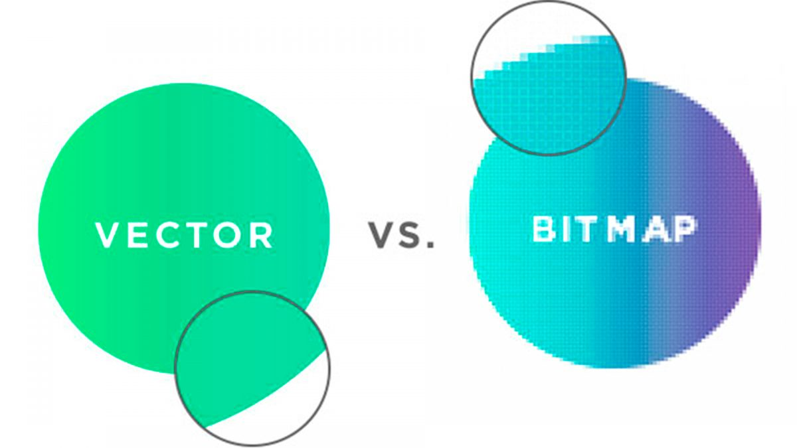
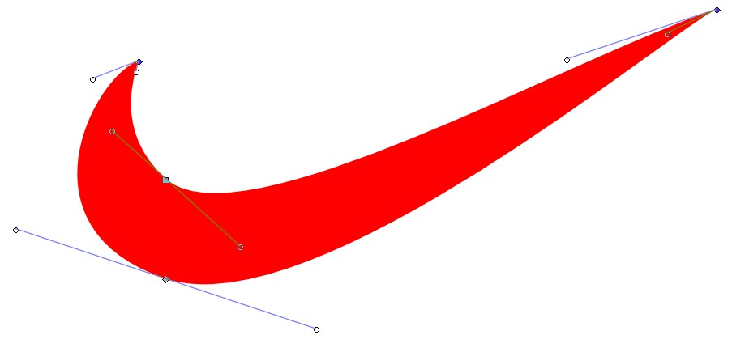

2.1 Introducción a los tipos de imágenes
Desde los comienzos de Internet, las imágenes forman parte de los componentes que no deben faltar en ninguna página web. Ya se trate de fotos o de gráficos, los elementos visuales captan la atención de las visitas y, en muchos casos, ofrecen un evidente valor añadido, revalorizando los proyectos a la par que destacan la información expuesta en los textos, hacen aclaraciones sobre los contenidos, ofrecen datos adicionales (en el caso, por ejemplo, de las infografías) o actúan como elementos que invitan a la reflexión. Mientras que su importancia queda patente, desde hace años existen ciertas imprecisiones en lo que respecta a los formatos de imagen que se usan. En este sentido, la gran variedad de opciones no les hacen nada fácil a los responsables de las páginas web encontrar el formato adecuado para cada ocasión, lo que adquiere todavía un papel más relevante en el caso de los dispositivos móviles.
2.2 Formato GIF
El formato GIF es el tipo de archivo favorito en internet debido a su capacidad para animar imágenes. Los archivos GIF utilizan mapas de bits y admiten hasta 8 bits/píxel, permitiendo 256 colores en la gama RGB de 24 bits.
¿Cuándo usar los GIF?
Estos tipos de imágenes, las podemos usar en imágenes que necesiten pocos colores o que tengan colores planos cómo por ejemplo logos, iconos, gráficos de datos…
Ejemplo de GIF

3.2 Formato JPG
Se trata del término acuñado por Joint Photographic Experts Group, grupo de expertos que creó el . jpg,. Un formato de compresión de imágenes, tanto en color como en escala de grises, con alta calidad. ... Normalmente alcanza una compresión de uno a diez con pocas pérdidas perceptibles en la calidad de la imagen.
¿Cuándo usar JPG?
Este tipo de imagen es recomendable usarla para fotos de alta calidad, cómo fotos de un fotógrafo.
Ejemplo de JPG

4.2 Formato PNG
PNG significa Portable Network Graphics, aunque algunos también le llaman PNG-not_GIF. A diferencia del GIF, maneja las transparencias con más elegancia y sin perder color porque soporta colores de 8-bits, y también de 24-bits, como JPG.
Transparencia de los PNG
En este tipo de archivos la transparencia es una de sus ventajas. Nos permite definir la cantidad de transparencia que va a tener esa imagen.
Ejemplo de PNG
1.5 Mapas de bits y imagen vectorial
A la hora de clasificar las imágenes existen de 2 tipos:
Bitmaps
El concepto de bitmap es también identificado como mapa de bits, imagen rasterizada o imagen matricial. Consiste en el conjunto de puntos, identificados como píxeles, que forman una imagen. Un píxel contiene información sobre el color que debe representar.
Imagen vectorial
El dibujo vectorial es un término que describe cualquier dibujo realizado con un software de ilustración vectorial como Adobe Illustrator. El dibujo vectorial se crea a partir de gráficos vectoriales, que son imágenes creadas con fórmulas matemáticas.
